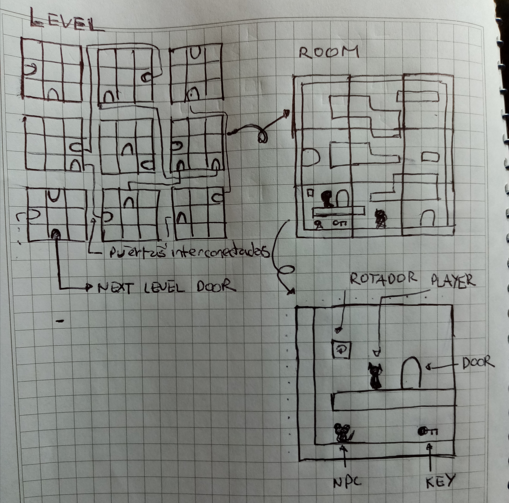

Como ya sabrán este juego comparte parte del core con bonefinder pero con modificaciones, así que primero analizaremos como implemente el generador de niveles de bonefinder y porque para este tuve que implementar uno nuevo.
Un mapa del nivel consta en un arreglo unidimensional que se lee bidimensional tomando (/ y %) de la siguiente manera
unsigned char map1[] =
{
0x01,0x01,0x01,0x01,0x01,0x01,0x01,0x01,0x01,0x01,
0x01,0x01,0x01,0x00,0x01,0x01,0x01,0x01,0x00,0x01,
0x01,0x01,0x00,0x00,0x02,0x00,0x03,0x01,0x00,0x01,
0x01,0x01,0x00,0x00,0x01,0x01,0x01,0x01,0x00,0x01,
0x01,0x00,0x01,0x00,0x00,0x00,0x00,0x00,0x02,0x01,
0x01,0x00,0x00,0x00,0x00,0x00,0x00,0x00,0x01,0x01,
0x01,0x00,0x00,0x01,0x01,0x01,0x00,0x00,0x01,0x01,
0x01,0x02,0x00,0x01,0x02,0x01,0x00,0x00,0x01,0x01,
0x01,0x01,0x01,0x01,0x01,0x01,0x01,0x01,0x01,0x01
};
donde
0x00 es el vacío 0x01 son las partes solidas 0x02 son objetos que el jugador debe recojer 0x03 es la posición inicial del jugador
Entonces dado en que ese juego necesitaba enterrar huesos para que el perrito pudiera escarbar y obtenerlos la lógica sería la siguiente :
en un pequeño pedazo de mapa de 2x2 como
AB CD
Y dado la mecánica de escarbar que hace un agujero en la celda de abajo, es decir si te encuentras en map1[pos] hace el agujero en map1[pos+map_length]
Si el jugador está en A: Si B es un espacio vacío, el jugador puede moverse a C y D (si son o no vacíos). Si B es una pared, el jugador solo puede moverse a C en primera instancia .y luego a D (si o si si es vacío)
Extrapolando a 3x3
F E F B A B D C D
Si el jugador está en A: Si B es un espacio vacío, el jugador puede moverse a C y D, sin importar si C o D son espacios vacíos o paredes. Si B es una pared, el jugador solo puede moverse a C en primera instancia. Luego, si D es un espacio vacío, el jugador puede moverse a D.
Para acceder a E, E debe ser un espacio vacío. Si E es un espacio vacío, el jugador puede moverse a F solo si F también es un espacio vacío.
pues le explique exactamente lo mismo a chatgpt y me hizo el siguiente código (aquí también esta mis modificaciones mías)
#define MAP_WIDTH 10
#define MAP_HEIGHT 9
#define playerRow 1
unsigned char col=0x00;
unsigned char row=0x00;
void generateRandomLevel(UBYTE map[]) {
// Establecer las celdas iniciales como vac�as (0x00)
for ( col = 0; col < MAP_WIDTH ; col++) {
map[playerRow * MAP_WIDTH + col] = 0x00;
}
// Generar el nivel fila por fila
for ( row = 1; row < MAP_HEIGHT ; row++) {
for ( col = 0; col < MAP_WIDTH ; col++) {
// Verificar si la posici�n es alcanzable desde la fila anterior
if (map[(row - 1) * MAP_WIDTH + col] == 0x00) {
// La posici�n es alcanzable, generar un objeto o espacio vac�o
map[row * MAP_WIDTH + col] = (rand() % 2)+ 1;
}
}
}
for ( i = 0; i < MAP_WIDTH * MAP_HEIGHT ; i++) {
if(map[i]>0x02){map[i]=0x01;}
}
for ( row = 0; row < MAP_HEIGHT ; row++) {
map[row * MAP_WIDTH] = 0x01; // Primera columna
map[row * MAP_WIDTH + MAP_WIDTH - 1] = 0x01; // �ltima columna
}
for ( col = 0; col < MAP_WIDTH ; col++) {
map[0 * MAP_WIDTH + col] = 0x01;
map[(MAP_HEIGHT - 1) * MAP_WIDTH + col] = 0x01;
}
map[playerRow * MAP_WIDTH + rand() % MAP_WIDTH ]=0x03;
}
//end of generator.c
ese es el código que use en bonefinder, haciendo también que itere sobre el nivel anterior y esta genial para poner items enterrados.
Pero para este juego no, puede crear partes en las que no podrías pasar hasta en el mismo bonefinder aveces crea niveles sin solución pero en un porcentaje muy bajo.
Aquí también hago una aclaración, el primer algoritmo que chatgpt me sugirió antes de explicarle la mecánica de bonefinder es el típico del back propagación más conocido como el tipo borracho que se va abriendo paso al azar, seguro que lo conoces; pero como ya dije necesitaba enterrar cosas no hacer túneles.
Ahora si, para este juego (keychan) tenía que hacer un algoritmo nuevo, además asegurarme que el nivel tenga las siguientes características :
que se pueda atravezar completamente, que además corte el nivel de alguna forma, esto lo explique en blogs anteriores dado que surgió un extraño comportamiento del personaje haciéndola un proyectil básicamente, además que sea lo suficientemente aleatorio.
Entonces lo que hice fue.. y no, no use ia esta vez xD, se me ocurrió la idea de usar templates para las niveles, en concreto estos:
pero además de eso para incrementar la aleatoriedad, lo que hice fue que el mapa resultante sea una convinacion al azar de un tile de cada uno de estos templates
además de ciertas zonas que denominare zonas de carga... mejor lo explico, el mapa de un nivel.. más bien el de una habitación de un nivel (que es lo que implemente) esta formado por 9 partes.
-----LEVEL---------- -----ROOM------------------
roomA roomB roomC -------- -------- --------
[][][] [][][] [][][] |partA | |partB | |partC |
[][][] [][][] [][][] | | | | | |
[][][] [][][] [][][] | | | | | |
-------- -------- -------
roomD roomE roomF -------- -------- --------
[][][] [][][] [][][] |partD | |partE | |partF |
[][][] [][][] [][][] | | | | | |
[][][] [][][] [][][] | | | | | |
-------- -------- --------
roomG roomH roomI -------- -------- --------
[][][] [][][] [][][] |partG | |partH | |partI |
[][][] [][][] [][][] | | | | | |
[][][] [][][] [][][] | | | | | |
-------- -------- --------
9 partes de 9 partes de 9 partes
o si prefieres ver mi dibujito que hize :v es de un game desing muy temprano y si termime funcionando a la waifu con la llave y el rotador

creo que queda claro, o no... como se componen los niveles...
bueno, continuemos...
la parte de la parte de la parte es un mapa de 10*9 similar a este
la parte (es decir la subparteno como sea) que aparece con los tiles de ladrillo son las partes inamovibles, es decir todas la partes (me refiero a las de 10*9) lo tienen y es precisamente para evitar que el player pase a otro mapa en diagonal
La parte gris clara es la denominada de carga, es decir si el player está en esta parte, por ejemplo la de la derecha;cuando carga el siguiente mapa aparece en la otra, en la izquierda, adicional se le aplica un scroll que lo mueve un tile más (por eso son dobles), estas partes solo son vacías si hay un mapa en esa dirección, de lo contrario se completa la pared para las partes que están en los extremos
La parte que está en blanco siempre es vacía , esto es debido a que el player tiende a caer siempre en estas partes al cambiar de mapa,para que los mapas sean consistentes ya que hay que actualizar los coliders, además recientemente implemente que los npcs spawneen aqui
Al final la única parte cambiante es la parte gris oscuro
Finalizado este el el código
#define MAP_WIDTH 10
#define MAP_HEIGHT 9
#define playerRow 1
extern unsigned char col;
extern unsigned char row;
extern unsigned char map1[];
extern unsigned char map2[];
extern unsigned char map3[];
extern unsigned char map4[];
extern unsigned char map5[];
extern unsigned char map6[];
extern unsigned char map7[];
extern unsigned char map8[];
extern unsigned char map9[];
void generateRandomLevel_part(UBYTE map[]) {
for ( col = 0; col < 90 ; col++) {
hash =rand() % 10;
switch(hash){
case 0:map[col] =template8[col];break;
case 1:map[col] =template1[col];break;
case 2:map[col] =template2[col];break;
case 3:map[col] =template3[col];break;
case 4:map[col] =template4[col];break;
case 5:map[col] =template5[col];break;
case 6:map[col] =template6[col];break;
case 7:map[col] =template7[col];break;
case 8:map[col] =template8[col];break;
default:map[col]= hash ;break;
}
}
for ( i = 0; i < MAP_WIDTH * MAP_HEIGHT ; i++) {
if(map[i]>0x02){map[i]=0x01;}
}
for ( row = 0; row < MAP_HEIGHT ; row++) {
map[row * MAP_WIDTH] = 0x01; // Primera columna
map[row * MAP_WIDTH + MAP_WIDTH - 1] = 0x01; // �ltima columna
}
for ( col = 0; col < MAP_WIDTH ; col++) {
map[0 * MAP_WIDTH + col] = 0x01;
map[(MAP_HEIGHT - 1) * MAP_WIDTH + col] = 0x01;
}
//gatillos(no son gatos peque�os xd) consistencia cambio de mapa
map[MAP_WIDTH+2]=0x00;map[MAP_WIDTH+7]=0x00;
map[MAP_WIDTH+1]=0x00;map[MAP_WIDTH+8]=0x00;
map[7*MAP_WIDTH+2]=0x00;map[7*MAP_WIDTH+7]=0x00;
map[7*MAP_WIDTH+1]=0x00;map[7*MAP_WIDTH+8]=0x00;
hash =0;
}
void generateRandomLevel_room(){
generateRandomLevel_part(map1);
generateRandomLevel_part(map2);
generateRandomLevel_part(map3);
generateRandomLevel_part(map4);
generateRandomLevel_part(map5);
generateRandomLevel_part(map6);
generateRandomLevel_part(map7);
generateRandomLevel_part(map8);
generateRandomLevel_part(map9);
for ( row = 2; row < 7 ; row++) {
// Primera columna
map2[row * MAP_WIDTH] = 0x00;
map3[row * MAP_WIDTH] = 0x00;
map5[row * MAP_WIDTH] = 0x00;
map6[row * MAP_WIDTH] = 0x00;
map8[row * MAP_WIDTH] = 0x00;
map9[row * MAP_WIDTH] = 0x00;
// segunda columna
map2[row * MAP_WIDTH+1] = 0x00;
map3[row * MAP_WIDTH+1] = 0x00;
map5[row * MAP_WIDTH+1] = 0x00;
map6[row * MAP_WIDTH+1] = 0x00;
map8[row * MAP_WIDTH+1] = 0x00;
map9[row * MAP_WIDTH+1] = 0x00;
// ultima columna
map1[row * MAP_WIDTH + MAP_WIDTH - 1] = 0x00;
map2[row * MAP_WIDTH + MAP_WIDTH - 1] = 0x00;
map4[row * MAP_WIDTH + MAP_WIDTH - 1] = 0x00;
map5[row * MAP_WIDTH + MAP_WIDTH - 1] = 0x00;
map7[row * MAP_WIDTH + MAP_WIDTH - 1] = 0x00;
map8[row * MAP_WIDTH + MAP_WIDTH - 1] = 0x00;
// penultima columna
map1[row * MAP_WIDTH + MAP_WIDTH - 2] = 0x00;
map2[row * MAP_WIDTH + MAP_WIDTH - 2] = 0x00;
map4[row * MAP_WIDTH + MAP_WIDTH - 2] = 0x00;
map5[row * MAP_WIDTH + MAP_WIDTH - 2] = 0x00;
map7[row * MAP_WIDTH + MAP_WIDTH - 2] = 0x00;
map8[row * MAP_WIDTH + MAP_WIDTH - 2] = 0x00;
}
for ( col = 3; col < 7 ; col++) {
// Primera fila
map4[0 * MAP_WIDTH + col] = 0x00;
map5[0 * MAP_WIDTH + col] = 0x00;
map6[0 * MAP_WIDTH + col] = 0x00;
map7[0 * MAP_WIDTH + col] = 0x00;
map8[0 * MAP_WIDTH + col] = 0x00;
map9[0 * MAP_WIDTH + col] = 0x00;
// segunda fila
map4[1 * MAP_WIDTH + col] = 0x00;
map5[1 * MAP_WIDTH + col] = 0x00;
map6[1 * MAP_WIDTH + col] = 0x00;
map7[1 * MAP_WIDTH + col] = 0x00;
map8[1 * MAP_WIDTH + col] = 0x00;
map9[1 * MAP_WIDTH + col] = 0x00;
// ultima fila
map1[(MAP_HEIGHT - 1) * MAP_WIDTH + col] = 0x00;
map2[(MAP_HEIGHT - 1) * MAP_WIDTH + col] = 0x00;
map3[(MAP_HEIGHT - 1) * MAP_WIDTH + col] = 0x00;
map4[(MAP_HEIGHT - 1) * MAP_WIDTH + col] = 0x00;
map5[(MAP_HEIGHT - 1) * MAP_WIDTH + col] = 0x00;
map6[(MAP_HEIGHT - 1) * MAP_WIDTH + col] = 0x00;
// penultima fila
map1[(MAP_HEIGHT - 2) * MAP_WIDTH + col] = 0x00;
map2[(MAP_HEIGHT - 2) * MAP_WIDTH + col] = 0x00;
map3[(MAP_HEIGHT - 2) * MAP_WIDTH + col] = 0x00;
map4[(MAP_HEIGHT - 2) * MAP_WIDTH + col] = 0x00;
map5[(MAP_HEIGHT - 2) * MAP_WIDTH + col] = 0x00;
map6[(MAP_HEIGHT - 2) * MAP_WIDTH + col] = 0x00;
}
}
//end of generador.c